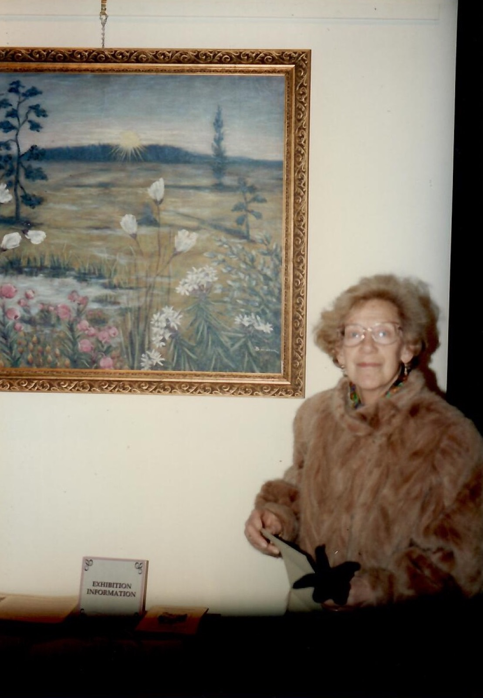
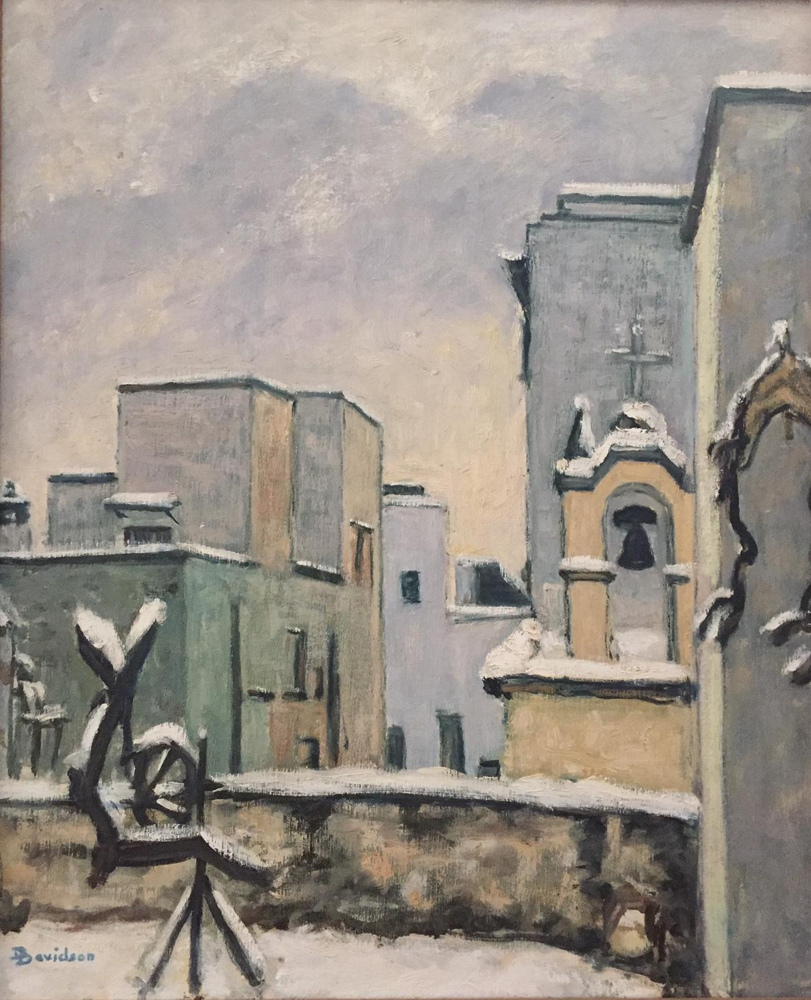

Dagmar Davidson
Pittrice e poetessa di origine svedese, Dagmar Davidson ha dipinto i paesaggi e le campagne del Salento e, soprattutto, la sua flora spontanea, che ha studiato, raccolto e difeso per tutta la vita.
Scopri l'itinerario di Dagmar Davidson
Sperimentazione di TOOL per developper: KnightLab - StoryMapIl progetto
Il progetto di archivio digitale d'autrice dedicato a Dagmar Davidson nasce da una riflessione sul problema dei patrimoni culturali sommersi: fondi documentari, collezioni private e percorsi artistici che, frammentari o inediti, e spesso affidati a memorie e archivi familiari, in assenza di adeguati strumenti di conservazione e valorizzazione rimangono esclusi dai circuiti di riconoscimento culturale.
Come trasformare un patrimonio documentario privato e frammentario in una risorsa digitale accessibile, organizzata e interrogabile?
L'obiettivo è trasformare la collezione privata di Dagmar Davidson in una risorsa documentaria strutturata e accessibile, capace di descrivere risorse eterogenee e favorire connessioni e interoperabilità, anche con altri patrimoni digitali.
L'archivio
L'archivio raccoglie il patrimonio culturale di Dagmar Davidson: una collezione di natura eterogenea che comprende diverse tipologie di materiali: scritti, opere d'arte, opere botaniche, fotografie e materiali d'archivio.
Per la progettazione e la sperimentazione del modello informativo è stato individuato un campione di 40 item, selezionati in modo da rappresentare l'eterogeneità documentaria della collezione. L'archivio si può sfogliare per sezioni, dal menu in alto o dall'elenco qui accanto, oppure cercare in tutto l'archivio. Di ogni documento si vede l'immagine e, quando c'è del testo, la sua trascrizione, foglio per foglio.